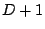
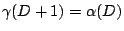
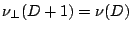
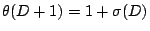
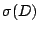
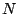

dimensions and repulsive gases at negative activity in dimensions. This implies relations between exponents of the two models:
(the exponent describing the singularity of the pressure), and
(the correlation length exponent of the repulsive gas). It also leads to the relation
, where
is the Yang-Lee edge exponent. We derive exact expressions for the number of DBP of size
in two dimensions.